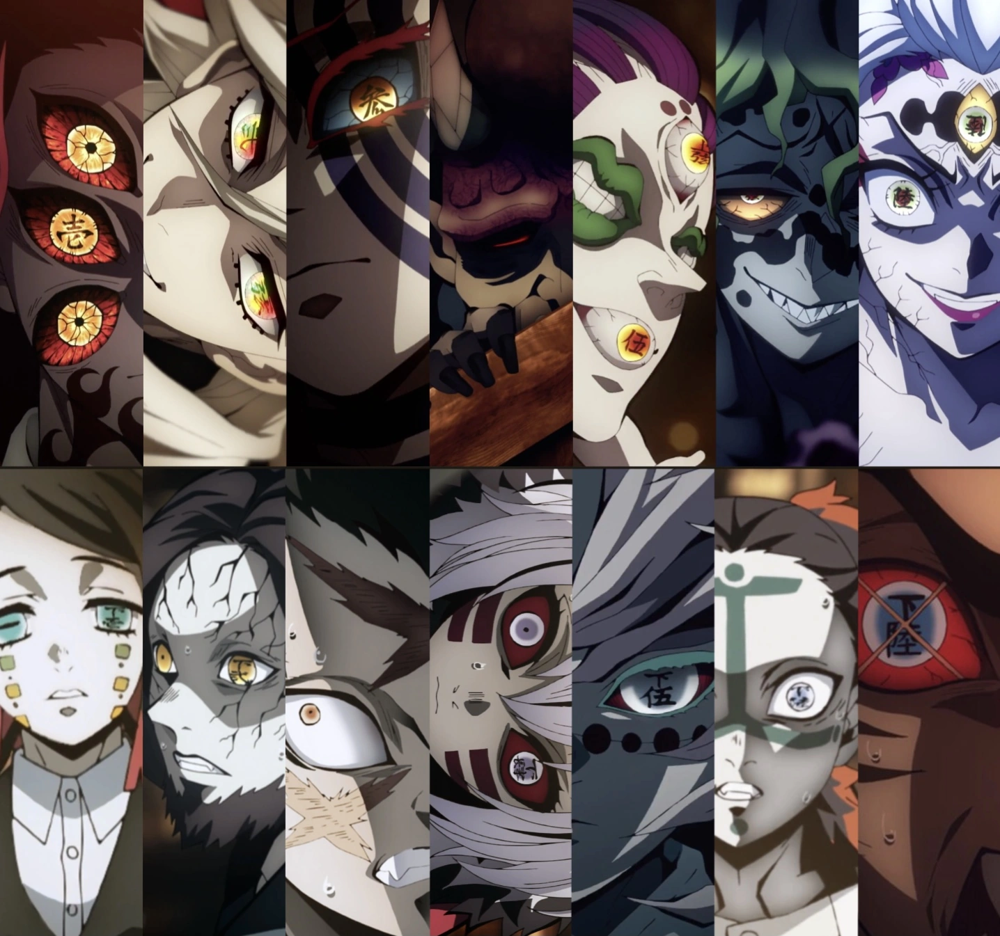

Demons are a human eating creature. Their abilites vary and can be powerful and have regenerative abilitiy, they can regrow their heads and cannot be killed by regular weapons. Demons can only be killed by the sun and a special sword used by Demon Slayers, the Nichirin Sword. By using decapitating a demon using the Nichirin Sword is the only way to successfuly kill a demon.